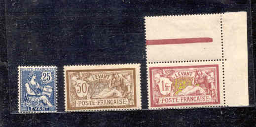
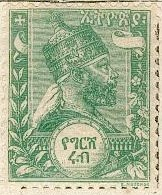
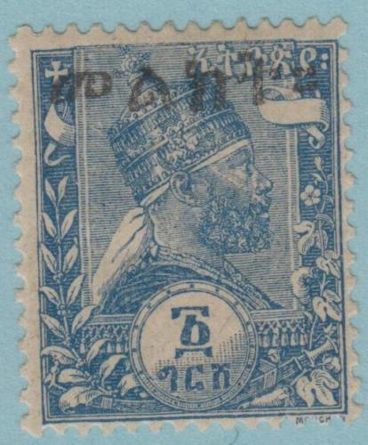
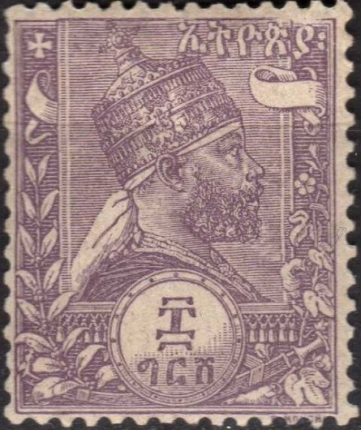
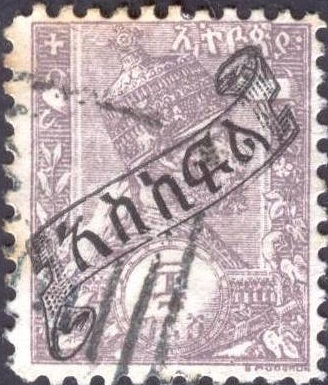
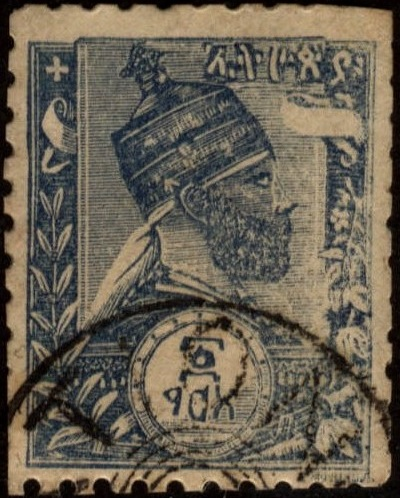
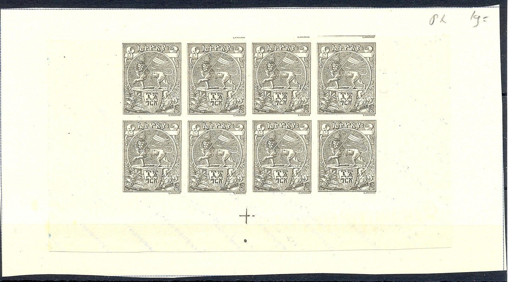
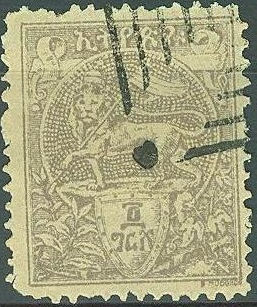
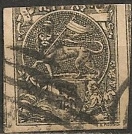

Return To Catalogue - Ethiopia 1906 onwards and miscellaneous
Capital Addis Abeba
Note: on my website many of the
pictures can not be seen! They are of course present in the
catalogue;
contact me if you want to purchase it.



1/4 g green 1/2 g red 1 g blue 2 g brown
The stamps dealer Arthur Maury offered these stamps at a discount in France (roughly half of the quantity of stamps printed was offered in this way). To distinguish stamps for real use in Ethiopia and stamps issued for stamp collectors they were overprinted with 'Ethiopie' (2 types) or native text (3 types):

"Ethiopie" overprint on 1 g blue and native overprint.
Surcharged with or without overprint in native text (1904)
05 on 1/4 g green 10 on 1/2 g red 20 on 1 g blue 40 on 2 g brown Surcharged and overprinted with native text and stars(1907)
1/4 on 1/4 g green 1/2 on 1/2 g red 1 on 1 g blue 2 g on 2 g brown 1908 Surcharged '1 PIASTRE' and fancy pattern

'1 PIASTRE' on 1/2 g red (also exists without black overprint on top) 1908 Surcharged

(Double inverted overprint? Might not be genuine!)
1/4 Pi on 1/4 g green 1/2 Pi on 1/2 g red 1 Pi on 1 g blue 2 Pi on 2 g brown 1911 Overprinted 'AFF. EXCEP FAUTE TIMB', value with pen (Dire Daoua Provisional)
1/4 g on 1/4 g green 1/2 g on 1/2 g green 1 g on 1 g blue 2 g on 2 g brown

Proofs in values that were later issued in the lion design.
Forgeries: Four different kinds of forgeries are known. The
forgeries of the forger Fournier are the most dangerous. Many
different overprints have been apllied to these forgeries and
images can be found in 'The Fournier Album of Philatelic
Forgeries'. The genuine stamps should be perforated 14 x 13 1/2,
however, the Fournier forgeries are perforated 14 x 14.
Furthermore, there is an error in the design, the white line, in
front of the face of the king, is interrupted by a flower at the
bottom (as in the genuine), this white line continues below the
flower in the genuine stamp, but it disappears in the forgeries
(source http://www.doig.net/Fournier.html). Also, the 2 white
lines to the right of the upper left hand cross do not go all the
way to the top (as in the genuine stamps), but stop earlier.
The other three forgeries have weird cancels; one with
"IMITATION" in a circle, made by Kamigata
of Japan, the other two a square of lines (there are two types?
or is this a genuine cancel as well?).
 


Forgeries with a square cancel, I've seen all four values. The
design is quite poorly done. The beard appears too pointy to me.
Are these Oneglia forgeries?


Slightly better printed forgeries, also with square cancels,
these are not the same forgeries as shown above?
Forgery with advertisement text at the back.

Kamigata forgeries, reduced sizes,
with 'IMITATION' around 4 concentric circles cancel. The lion
design does not seem to have been forged by this forger. I've
also seen the blue stamp of this forgery type
(http://doig.net/1895Issue.html). The neck is not curved as in
the genuine stamps.


Are these Kamigata forgeries as well?


The white inner frame line (here just below the "X" of
"FAUX") does not continue all the way down in the
Fournier forgery of the Menelik issue.
Forged cancels as used by Fournier (reduced sizes)
Fournier forgeries as found in the Fournier album.
The Dire Daoua overprint was also forged. See http://doig.net/1911DDProv.html for more information. The relative position of the first "E" of "EXCEP" and the "E" of "FAUTE" is different from the genuine. The bottom part of the "P" of "EXCEP" should point to the left of the "B" of "TIMB", in the forged overprint it points to the center of the "B".
4 g brown 8 g lilac 16 g black
The stamps dealer Arthur Maury offered these stamps at a
discount in France. To be able to distinguish stamps for real use
in Ethiopia and stamps issued for stamp collectors these stamps
were overprinted with "Ethiopie" (2 types) or native
text (3 types).
Surcharged with or without overprint in native text (1904)


80 on 4 g brown 1.60 on 8 g lilac 3.20 on 16 g black Surcharged and overprinted with native text and stars(1907) 4 on 4 g brown 8 on 8 g lilac 16 on 16 g black 1908 Surcharged with 'piastres' 4 Pi on 4 g brown 8 Pi on 8 g lilac 16 Pi on 16 g black 1911 Overprinted 'AFF. EXCEP FAUTE TIMB', value with pen (Dire Daoua Provisional)
(Genuine)
4 g on 4 g brown 8 g on 8 g lilac 16 g on 16 g black
(Surcharged stamp)
These stamps are forged by Fournier, examples:


A whole sheet of Fournier forgeries
Forgeries: Fournier made forgeries of these stamps as well as the previous Menilek issue. Many different overprints can be found in 'The Fournier Album of Philatelic Forgeries'. The genuine stamps should be perforated 14 x 13 1/2, however, the Fournier forgeries are perforated 14 x 14. Again, there is an error in the design, the upper right scroll has 3 lines inside the loop (instead of 4) and no lines in front of the loop (instead of 3), source http://www.doig.net/Fournier.html. Also, the Fournier forgeries in the lion design have a shading on the right back leg, which is different from the genuine stamps. Fournier also forged cancels for this issue:
Forged cancels as used by Fournier (reduced sizes)


Fournier forgery with various overprints.
Other forgeries exist.

Forgery with a square of lines cancel, made by the same forger
who made the corresponding Melinek forgeries shown above.

Is this an Oneglia forgery?

{kind=link}
{kind=link}
{kind=link}
{kind=link}
{kind=link}
{kind=link}
{kind=link}
{kind=link}